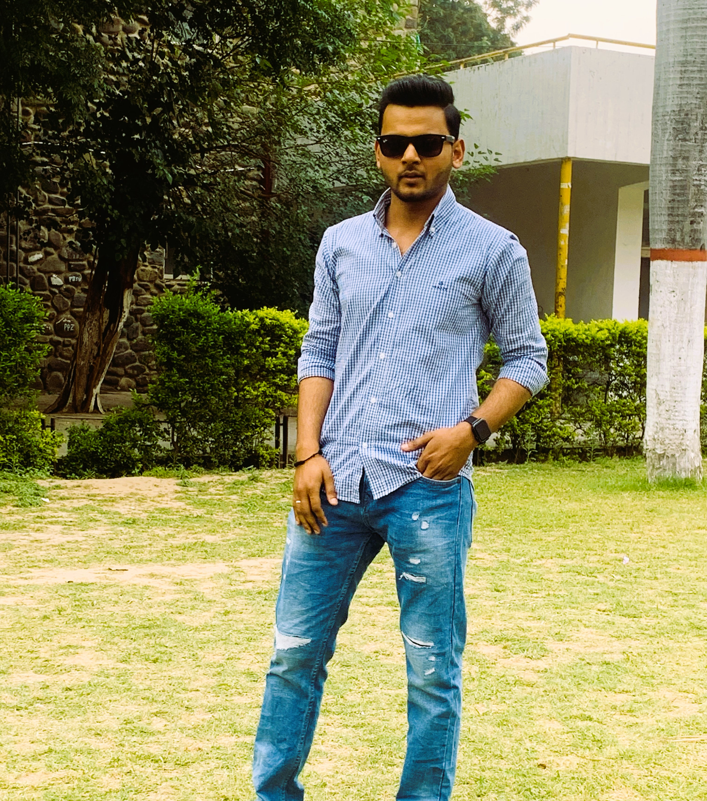

First Post
Title: "Transform Your Life: 7 Powerful Habits to Embrace Today"
Hey, lovely souls! Welcome back to our vlog where we embark on a journey of self-discovery and growth. Today, we're diving deep into the realm of good habits – those little daily rituals that have the power to transform our lives in profound ways.
Rise and Shine: Morning Rituals
The way we start our day sets the tone for everything that follows. Let's explore morning rituals that energize us, from meditation and journaling to a refreshing morning walk.
Nourish Your Body: Healthy Eating
Our bodies are our temples, and what we put into them matters. Let's explore the wonders of nutritious eating and how it fuels not just our bodies but also our minds.
Move Your Body: Exercise and Fitness
Exercise isn't just about physical health; it's about mental well-being too. We'll discuss how finding joy in movement can boost our mood and increase our vitality.
Mindfulness Matters: Practicing Presence
In a world filled with distractions, cultivating mindfulness is key. Let's explore techniques to anchor ourselves in the present moment and savor the beauty of each experience.
Learn and Grow: Continuous Education
Lifelong learning keeps our minds sharp and our hearts open. We'll discuss the importance of feeding our curiosity and expanding our knowledge, whether through books, courses, or experiences.
Spread Kindness: Acts of Compassion
Kindness is contagious, and the world can always use a little more of it. Let's explore simple ways to spread love and compassion to those around us, creating ripple effects of positivity.
Embrace Rest: Prioritizing Sleep
In our hustle culture, sleep is often overlooked. Yet, it's the foundation of our well-being. Let's discuss strategies for improving sleep quality and embracing rest as a sacred act of self-care.
Remember, Rome wasn't built in a day, and neither are habits formed overnight. It's about progress, not perfection. Let's embark on this journey together, one habit at a time, as we strive to become the best versions of ourselves.
What are some of your favorite habits that have positively impacted your life? Share them in the comments below, and let's inspire each other to greatness. Until next time, stay blessed, stay beautiful, and keep shining your light brightly in the world. Peace and love, friends! ✨🌱💖
Second Post

Title: "Game On: Exploring the Magic of Play"
Hey, gamers and game enthusiasts! Welcome back to our channel, where we're diving deep into the wonderful world of games. Whether you're a hardcore gamer, a casual player, or someone who just enjoys a good old-fashioned board game night, there's something magical about the power of play.
1. *The Joy of Exploration*
Games have this incredible ability to transport us to new worlds and experiences. From traversing vast virtual landscapes to uncovering hidden treasures in board game quests, the joy of exploration is at the heart of gaming.
2. *Building Connections*
One of the most beautiful aspects of gaming is its ability to bring people together. Whether you're teaming up with friends for an epic online battle or gathering around a table for a night of laughter and strategy, games foster connections and create lasting memories.
3. *Problem-Solving and Critical Thinking*
Games challenge our minds and encourage us to think outside the box. Whether it's solving puzzles, strategizing in real-time, or making split-second decisions, games are a playground for our problem-solving skills and critical thinking abilities.
4. *Creativity Unleashed*
Gaming isn't just about consuming content – it's about creating it too. From designing your own levels in sandbox games to crafting intricate stories in role-playing adventures, gaming unleashes our creativity and allows us to become the architects of our own digital worlds.
5. *The Thrill of Competition*
There's nothing quite like the adrenaline rush of competitive gaming. Whether you're vying for victory in esports tournaments or challenging your friends to a friendly game of Mario Kart, the thrill of competition adds an exciting edge to the gaming experience.
6. *Escapism and Relaxation*
In a world that's constantly buzzing with activity, games offer a welcome escape from the stresses of everyday life. Whether you're immersing yourself in a captivating story or simply unwinding with a round of your favorite game, gaming provides a moment of relaxation and rejuvenation.
So, whether you're embarking on an epic quest, engaging in friendly competition, or simply seeking a moment of escapism, remember to embrace the magic of play. After all, in the world of gaming, the only limit is your imagination.
What are some of your fondest gaming memories? Share them with us in the comments below, and let's continue celebrating the joy and wonder of games together. Until next time, game on! 🎮✨.
Third Post
pyramids:- a shape with a flat base and three of four sides in the shape of triangles.....
The Egyptian pyramids are ancient pyramid shaped masonry structures located in egypt they have stood for nearly 5000 years, and it seems likely that they will continue to stand for thousands of years yet.and its makes the egypt more attractive...
They are over eighty of them scattered along the bank of the Nile, some of which are different in shape from the actual pyramids. .
As of November 2008, sources cite either 118 or 138 as the number of identified Egyptian pyramids.Most were built as tombs for the country's pharaohs and their consorts during the old and middle kingdom periods.
The earliest known Egyptian pyramids are found at saqqara, northwest of memphis, although at least one step-pyramid-like structure has been found at Saqqara, dating to the 1st Dynasty: Mastaba 3808, which has been attributed to the reign of Pharaoh Anedjib, with inscriptions, and other archaeological remains of the period, suggesting there may have been others. the otherwise earliest among these is the pyramid of Djoser built c. 2630–2610 BC during the third dynasty This pyramid and its surrounding complex are generally considered to be the world's oldest monumental structures constructed of dressed masonary
The most famous Egyptian pyramids are those found at Giza on the outskirts of Cairo. Several of the Giza pyramids are counted among the largest structures ever built The Pyramid of Khufu at Giza is the largest Egyptian pyramid. It is the only one of the SEVEN WONDERS OF THE ANCIENT WORLD still in existence.......................
The pyramids are built thousands of years ago and still look beautiful. Most of the damage is done by humans because they are greedy for treasure or, more often, for stone to use in modern buildings. The dry climate of Egypt has helped to protect the pyramids and their shape has made them less likely to fall into ruins. These are good reasons why they can still be seen today, but perhaps the most important is that they were planned to last forever.....
One thing is certain: there must have been months of careful planning before they could begin to build. The first thing they had to do was to choose a suitable place. You may think that this was an easy task, with miles and miles of empty desert around, but a pyramid could not be built just anywhere. Certain rules had to be followed strictly and certain problems overcome.
The pyramid had to be on the west side of the Nile; the side on which the sun sets. This was for religious reasons. The pyramid also had to stand well above the level of the river to protect it against the regular floods. The pyramid could not be too far from the Nile, however, as the stones to build it needed to be carried in boats down the river to the nearest point. Water transport was, of course, much easier than land transport.. The builders also had to find rock, which was not likely to crack under the great wag of the pyramid. Finally, the pyramid had to be near the capital, or better still, near king's palace so that he could visit it easily and personally check the progress made on the final resting place for his body. ✌✌
About Me

I'm Mohammad Sharib, the creator and voice behind this blog. As a passionate individual with a deep interest in various aspects of life, I've embarked on this journey to connect with like-minded individuals, share stories, and inspire others to embrace the beauty of the human experience.
My love for exploration began at a young age when I discovered the magic of storytelling through books. Since then, it has evolved into a driving force in my life, shaping my experiences, perspectives, and aspirations.
Through this blog, I aim to spark meaningful conversations, offer valuable insights, and create a community where we can learn and grow together. Whether it's sharing personal anecdotes, exploring new ideas, or discussing topics close to my heart, I hope to create content that resonates with you and inspires positive change.
When I'm not immersing myself in the world of writing and creativity, you can find me exploring nature trails, experimenting in the kitchen, or curling up with a good book and a cup of tea. I believe in living life to the fullest and finding joy in the simple moments.
But above all, what truly drives me is the opportunity to connect with incredible individuals like you. Your thoughts, experiences, and perspectives enrich the fabric of this blog and make it a vibrant community worth being a part of.
Thank you for joining me on this adventure. Together, let's explore, learn, and grow as we journey through the wonderful tapestry of life.
Here's to embracing the beauty of the journey and savoring every step along the way.